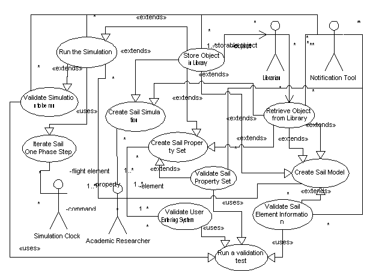

|
|
SailAway Project
|
|
adiffer 2001/12/26 |
SailAway Project - 'The Problem Being Solved.' Solar Sail research is done by a variety of people using tools that range from home grown to sophisticated mathematical and engineering analysis. While some of the end results of this research do get published and survive the ups and downs of any one person's interest in the subject, the tools themselves rarely get traded or improved unless two like minded researchers can find each other and not violate the intellectual property laws that govern their work. |
|---|---|
|
adiffer 2001/12/26 |
SailAway Project - 'Why Solve The Problem?' A careful reading of the solar sail literature shows that the subject matter covered by theorists proposing solar sail missions is generally confined to a few mission types. These missions can be modelled by current tools or minor improvements on older tools. |
|
adiffer 2001/04/15 |
SailAway Requirements Specification - 'A Case Study' We are intent on developing an automated tool for the simulation of structure and flight of solar sails in the inner solar system. This tool will enable researchers to record sail designs, initial conditions, and expected final conditions for simulation and return to them ephemerides, structural histories, and optimization choices that result from the simulation run they started. The tool will also maintain a library of prior simulations in order to support solution space searches by researchers and faster response times for casual browsers. |
|
adiffer 2002/02/07 |
SailAway in Context (only four actors are shown for now)  |